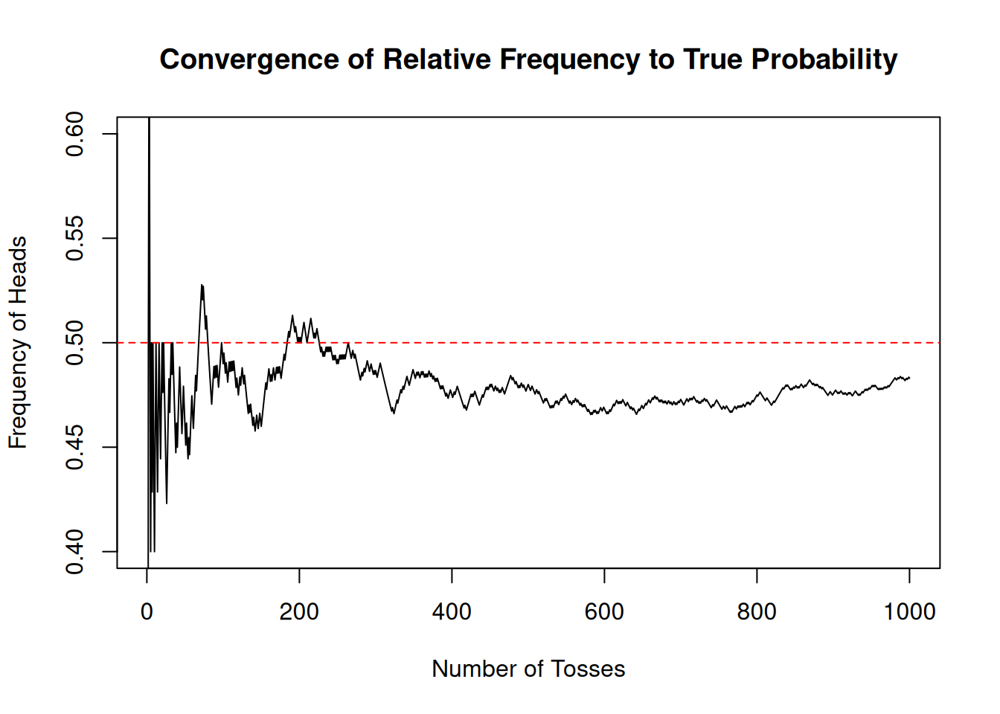

A <- c(1,2,3)
B <- c(2,4,6)2 Probability: Basic Definitions and Rules
This lecture explores the fundamentals of probability, including random experiments, sample spaces, and events, to better understand uncertainty. Building on previous concepts, we will delve deeper into empirical probability and explore its foundational role in probability theory. We will also examine the concept of independence, essential for understanding interactions between events. In contrast to lecture 1 we will strive for a more formal discussion of the concepts we learned so far and present probability as a mathematical theory.
As in the previous lecture R will help us to better understand these concepts in practice. We will substantially enlarge our knowledge of R in this lecture to build more complex simulations as well as to enhance our ability to manipulate data for probabilistic analysis. As a finance context we will use stock market data as our leading example.
Let us briefly recap lecture 1: In lecture 1 we looked at an intuitive notion of probability as it was conceived at the origins of probability theory. The key idea there was that one approach to quantify or measure something like uncertainty you consider cases which are equally probable and then compute various probabilities by counting such cases. If the probability of cases do not influence the probability of other cases, if outcomes are independent, using this intuitive idea we can already analyse fairly sophisticated problems like some problems of coincidences.
We also learned some basic uses of R and how we can use R to build random experiments and simulate uncertain outcomes. We learned how we can use R to visualize experiments to enhance our understanding and how we can interact with an LLM to dive deeper into problems and concepts we are learning. For the visualizations we informally introduced the idea of repeating a random process many times and use the empirical relative frequency of events as measures of the probability of an outcome using a new idea of thinking about probabilities. In this way the informal discussion in lecture 1 gave us a panoramic overview both of basic probability ideas as well as of R which we are now going to enhance and deepen.
2.1 Terminology
Probability is a mathematical theory that provides a rigorous framework for understanding uncertainty. It is particularly useful when analyzing real-world phenomena, such as random sampling in surveys or fluctuations in stock prices.
Let us now formalize the foundational concepts of this theory:
TipDefinition: Random Experiment:
A process with a set of possible outcomes, where the specific outcome cannot be predicted with certainty beforehand.
To clarify this concept, we define uncertain outcomes in advance. We pin down the possible outcomes by agreeing at the outset what we want to consider as the possible outcomes. Take the simple example of considering whether the price of a stock is going to rise or fall at the next day. In practical situations the outcome of a move in the stock price can be that it rises or falls but it could in principle also stay the same. Still when we think about the experiment of observing the stock price tomorrow in many applications in Finance we usually agree that rise and fall are the only possible outcomes of this experiment. When we want to consider the random experiment that includes the case that the price stays the same we need to agree upfront that the possible outcomes are rise, fall and unchanged.
This collection of all possible outcomes in probability theory is called the
TipDefinition: Sample space
The collection of all possible outcomes of an experiment is called the sample space and is denoted as the set \({\cal S}\)
In the example before when we look at rises and falls in the stock price we would have \({\cal S} = \{rise, fall \}\)
TipDefinition: Basic outcome, event, simple event
A basic outcome is a single possible result of a random experiment. An event is a subset of the sample space, representing one or more outcomes. A simple event is an event containing exactly one basic outcome.
Example: For \({\cal S} = \{\text{rise},\text{fall} \}\), the event \(\{\text{rise}\}\) is a simple event, while the event \(\{\text{rise, fall}\}\) includes all outcomes and corresponds to the entire sample space.
In the first lecture we learned about two approaches to measure probability. But the theory of probability actually does not depend on how we measure it precisely. In the theory of probability this measure is an abstract concept.
TipDefinition: Probability
For a given (discrete) sample space \({\cal S}\), Probability is a function that assigns a value to each event, representing its likelihood. The function has to fulfill three properties:
- \(P({\cal S}) = 1\).
- For any event \(A \in {\cal S}\), \(0 \leq P(A) \leq 1\). The probability of an event can never be negative or larger than 1.
- For mutually exclusive events \(A\) and \(B\), \(P(A \cup B) = P(A) + P(B)\).
Thus when we talk about probability in a precise and meaningful sense we can only do so in relation to a given sample space or to a certain conceptual experiment.
I have introduced here probabilities with relation to a discrete sample space. The sample spaces discussed in Lecture 1 include finite sets, which can be small or large, such as the extensive output space of the SHA-256 hash function.
There are also more complicated discrete sample spaces: Think of the random experiment of tossing a coin as often as necessary to see Heads for the first time. We can begin writing down the basic outcomes as: \(E_1=H, E_2=TH, E_3 = TTH, E_4 = TTTH, ...\). An event where Heads never appear, denoted \(E_0\), may also be considered. In this case, when the basic events can be arranged into a simple sequence. A sample space is called discrete if it contains only finitely many points, or infinitely many points which can be arranged into a simple sequence.
Not all sample spaces are discrete. Except for the technical tools required there is no essential difference between the two cases. In our discussion of probability in this lecture we consider mostly discrete sample spaces, however we will also discuss some basic non-discrete sample spaces later in the lectures.
2.2 Probability in theory and applications of probability
Probabilities are expressed as numbers between 0 and 1. As mentioned by Feller (1968) in his famous probability textbook, these numbers are of the same nature as distances in geometry. In the theory we assume they are given to us.
From the viewpoint of probability theory, we need not assume anything about how they are measured. In this sense probabilities in the theory of probability are an abstract measure of uncertainty.
In practical applications, determining probabilities or applying theory often requires sophisticated statistical methods. So, while the mathematical as well as the intuitive meaning of probability are clear only as we proceed with the theory we will get a better ability to see how we can apply this concept.
2.3 Probability and the language of sets
Probability theory relies on the language of sets to describe relationships between events. Understanding key set operations is essential for working with probabilities effectively.
Let’s go through them and illustrate the concepts in the context of the examples we have already developed in lecture 1.
TipDefinition: Set Union
The union of two events \(A\) and \(B\) represents all outcomes that belong to \(A\), \(B\) or in both. It is written \(A \cup B\).
Let us use the example of the experiment of rolling a die. The sample space \({\cal S}\) is the set of all possible outcomes of rolling the dice \({\cal S}=\{1,2,3,4,5,6\}\). Assume one event is that the outcome is 1, 2 or 3. In set notation, we would write \(A = \{1,2,3\}\). Let us also assume that the second event is that the outcome is some even number, i.e. 2, 4, 6. Again using set notation we would write \(B = \{2,4,6\}\). The event \(A \cup B\) is then the set of all outcomes such that the outcome is in \(A\) or in \(B\) or in both or these sets.
You can implement set operations in R because R provides functions for computing set operations. Let us use the occasion to show you briefly how to use these functions in the context of this example: We define the sets \(A\) and \(B\) first using the assignment operator:
We compute the union by using the function union()
union(A,B)[1] 1 2 3 4 6which gives us the union of both sets.
To understand this operation better we can visualize the set union in this example by looking at Figure 2.1
The sample space \({\cal S}\) is the gray set containing all possible outcomes of our random experiment. Graphically the union of \(A\) and \(B\), \(A \cup B\) is a subset of the sample space, the entire colored area.
TipIntersection
The intersection of two events are all outcomes that are both in \(A\) and in \(B\). It is written as \(A \cap B\).
In R we would implement this operation by using the function intersect() and apply it to our sets \(A\) and \(B\) we have defined before.
intersect(A,B)[1] 2Figure 2.2 visualizes this operation graphically
The intersection of \(A\) and \(B\), \(A \cap B\) is the orange area containing the dice face with two points. Indeed two is both in \(A\) and in \(B\), which is exactly the meaning of set intersection.
TipComplement
The complement of an event \(A\) within the sample space \({\cal S}\) is the set of all outcomes that are in \({\cal S}\) but not in \(A\). It is written as \({\cal S} \setminus A\)
Lets say we want to get the complement, or the set difference of \(A \cup B\) with respect to the sample space \({\cal S}\).
The R implementation of the set difference operation is the function setdiff(). This is how we would tell R to compute the set difference of the union of \(A\) and \(B\) and the sample space \({\cal S}\) in our example of the die:
S <- c(1,2,3,4,5,6)
setdiff(S, union(A,B))[1] 5This can again be visualized in Figure 2.3
This complement is the dice shown in the light reddish area, i.e. all the elements of \({\cal S}\) which are not in \(A \cup B\).
TipMutually Exclusive
Two events \(A\) and \(B\) are mutually exclusive if they can not occur simultaneously. This means \(A \cap B = \emptyset\), their intersection is empty.
An example in our context is the set of even outcomes \(B=\{2,4,6\}\) and the set of odd outcomes, let us call it \(C=\{1,3,5\}\). If we intersect these sets
B <- c(2,4,6)
C <- c(1,3,5)
intersect(B,C)numeric(0)we get the empty set, which is expressed by R by giving the data type, in this case numeric, because we are intersecting sets of numeric values, followed by (0). This means, there is no numeric value in the intersection of \(B\) and \(C\).
Let us discuss set operations a bit further by thinking about the probability of the union of two events \(A\) and \(B\) within the context of our visual examples. Remember that we had \(A = \{1,2,3 \}\) and \(B = \{ 2,4,6\}\). Look at Figure 2.4
We would like to know what is the probability of \(P(A \cup B)\)? Now if we add up \(P(A)\) and \(P(B)\) we would assign a probability to the outcome \(2\) twice. Such double counting must be avoided and thus we have to subtract \(P(A \cap B)\) the intersection, so that: \(P(A \cup B) = P(A) + P(B) - P(A \cap B)\). Now you see what the qualification mutually exclusive does in our probability rule 3. When \(A\) and \(B\) are mutually exclusive \(A \cap B = \emptyset\) and in this case \(P(A \cup B) = P(A) + P(B)\). We can add up the probabilities because when events are mutually exclusive we can not double count events by adding up individual probabilities.
NoteNow you try
If you drop the qualification that \(A\) and \(B\) must be mutually exclusive in point 3 in the definition of probability. How would rule 3 have to be changed?
2.4 Using an LLM to Deepen Your Understanding of Set Theory in Probability
An LLM can be a helpful tool to explore concepts and solidify your understanding. Here are some example of what you could do:
2.4.1 Ask for Clarifications
If a definition or concept isn’t clear, ask the LLM to explain it in simpler terms or using different examples. For instance:
TipPrompt
“What is the difference between the union and intersection of sets in probability? Can you give examples?”
TipFollow up
“Can you compare this to a real-life scenario, like rolling a die or flipping a coin?”
2.4.2 Generate Additional Examples
Use the LLM to create new examples similar to the ones in the lecture. This will give you more practice applying the concepts.
TipPrompt
“Give me an example of mutually exclusive events involving sports outcomes.”
TipPrompt
“Can you show a sample space and events for tossing two coins?”
2.4.3 Simulate Visualizations and Code Interpretation
While the LLM doesn’t directly produce visuals, you can ask it to describe how a diagram or R output would look. This helps connect theoretical concepts to their graphical representations. For example:
TipPrompt
“Describe what a Venn diagram looks like for \(A \cup B\), \(A \cap B\), and \(A \setminus B\).”
TipPrompt
“What does the R function union(A, B) compute? How is it related to \(A \cup B\)?”
2.4.4 Practice Applying Definitions
Use the LLM to test your understanding by quizzing yourself.
TipPrompt
“Ask me questions about the definitions of sample spaces, union, intersection, and complement.”
TipPrompt
“Give me a scenario and ask which set operation applies.”
2.4.5 Explore Real-World Applications
Use the LLM to explore how these concepts apply in real-world contexts beyond the lecture.
TipPrompt
“How is the concept of set intersection used in data science or finance?”
TipPrompt
“Explain how mutually exclusive events are important in designing experiments.”
2.4.6 Learn R Through Step-by-Step Guidance
If you’re new to R, ask the LLM to guide you through using functions like union(), intersect(), and setdiff() step by step.
TipPrompt
“Explain how to use setdiff() in R with an example involving dice rolls.”
TipFollow up
“How does this output relate to the complement of a set?”
- Dive Deeper into Probability Rule 3:
Use the LLM to generate explanations and examples that clarify how probabilities relate to set operations.
TipFollow up
“Explain why \(P(A \cup B) = P(A) + P(B) - P(A \cap B)\).”
TipFollow up
“Can you provide a numerical example to illustrate this rule?”
2.4.7 Simulate Discussions
Ask the LLM to take the role of a peer or instructor to simulate a conversation about the material.
TipPrompt
“Pretend you are my study partner. Let’s discuss the complement of events and its significance in probability.”
By actively engaging with the LLM through these kinds of prompts, you can practice, explore, and deepen your understanding of the material beyond the lecture. Try it alone or with your group.
2.5 Probability and Frequency
Now it is time to explain a connection we made so far informally when we looked at visualizations and simulations, where we used connection between relative frequencies of probabilities in repetitions of a random experiment.
The frequency interpretation of probability is a practical approach to understanding uncertainty. It defines the probability of an event \(A\) as:
\[\begin{equation*} P(A) = \frac{\text{Number of times $A$ occurs in repeated identical trials}}{\text{Total number of trials}} \end{equation*}\]
This interpretation is intuitive and often used in fields like engineering, finance, and natural sciences. However, it raises important questions about the connection between observed frequencies and theoretical probabilities.
The origins of this discussion reach back to the seventeenth century. The philosophers Gottfried Wilhelm Leibnitz (1646 - 1716) and Jacob Bernoulli (1655 - 1705) had great hopes for the new field of probability to find applications in fields like medicine, law, commerce and finance. This interest in exploring new fields of potential applications drove them to study frequency evidence of events. They felt that relying on intuitively equally probable cases might not be enough for these ambitious application attempts.
Jacob Bernoulli gave an answer which is among the great ideas in probability theory (see Diaconis and Skyrms (2019)), the weak law of large numbers. It establishes one of the most important connections between frequency and probability.
2.5.1 The Weak Law of Large Numbers (WLLN)
The Weak Law of Large Numbers provides a rigorous mathematical foundation for the frequency interpretation of probability. It states:
TipWeak Law of Large Numbers
As the number of independent and identically distributed (i.i.d.) trials increases, the relative frequency of an event converges to its true probability with high probability.
Now let us pause here and restate what the weak law says: The law says that
- Over many trials, the observed frequencies of outcomes will get closer to their theoretical probabilities.
- This convergence occurs with high likelihood as the number of trials increases.
Observe also what the weak law does not say:
- Frequencies are not probabilities. Instead frequencies approximate probabilities as trials increase.
- The weak law does not guarantee exact convergence in finite samples - it describes long run outcomes of repeating identical experiments many times.
Let’s go back to the example of the fair coin we played with in lecture 1: There we constructed a fair coin toss where \(P(\text{Heads})=0.5\). When we have just a few tosses, say 10 times, you might observe 6 Heads (60%), which is close to but not exactly 50%. As you increase the tosses, say to 100, the frequency might be 52 Heads (52%), closer to 50%. if you go to even more tosses, say 10,000 tosses, the frequency approaches 50%.
This demonstrates that, as the number of trials increases, the relative frequency converges to the theoretical probability.
It is crucial to understand that Bernoulli’s Law of Large Numbers does not assert that frequencies are probabilities. Rather, it describes how, under certain conditions, frequencies fall within specific bounds relative to probabilities. Specifically, given a theoretical probability, a desired margin of error, and a confidence level, Bernoulli’s result provides an upper bound on the number of trials required for the relative frequency of an event to approximate its true probability.
This distinction highlights an important limitation: the Weak Law of Large Numbers addresses the problem of inference from probabilities to frequencies, not the reverse. That is, it shows how probabilities can predict the behavior of frequencies in repeated trials, but it does not justify using observed frequencies as definitive probabilities. Instead, the theorem ensures that as the number of trials grows, the relative frequency of an event will converge to its probability, within specified bounds.
Although we will frequently use frequency-based measures of probability in practical applications, it is essential to recognize the conceptual gap between the idealized mathematical theory and the empirical realities it seeks to describe. Probability theory relies on the concept of limiting relative frequencies, which exist only in an idealized framework of infinite trials. Real-world applications, however, involve finite data and inherently require interpretation, judgment, and domain expertise.
This distinction between theory and practice is more than a technical nuance—it addresses a fundamental challenge for any theory with practical ambitions: How does the idealized framework relate to the messy complexities of reality? In probability, as in other fields, there is no direct or naive application of theory to practice. Bridging this gap demands a sound understanding of the theory, along with careful consideration of real-world conditions and context.1
1 For a formal statement of the weak law of large numbers, we need more concepts which we have not yet introduced, in particular the notion of a random variable. Let me give the formal statement here for those of you who are interested and know the concept of a random variable already: Let \(X_1, X_2, \dots, X_n\) be \(n\) independently, identically distributed random variables with expected value \(\mu\) and variance \(\sigma^2\). Let \(\bar{X}_n\) denote the sample mean. Then the weak law of large numbers states: \(P(|\bar{X}_n - \mu | \geq \epsilon) \to 0 \quad \text{as } n \to \infty\). This means that the probability of the sample mean deviating significantly from the expected value diminishes as the number of trials increases.
2.5.2 Exploring the Weak Law of Large Numbers with R
In the following code chunk we first define a coin as we did in lecture 1 with the understanding that 1 represents Heads and 0 represents Tails. Then we use the replicate function and the sample function to toss the coin 1000 times.
Now in the next step we use the logical condition results == 1 to create a logical vector indicating whether each toss resulted in Heads. cumsum()then calculates the cumulative count of Heads after each toss. Dividing this cumulative count by (1:n) (the toss number) gives the cumulative relative frequency of Heads at each step.
Then we plot these frequencies againts the number of tosses. The \(x\)-axis represents the number of tosses, while the \(y\)-axis represents the relative frequency of heads. We draw a red horizontal line where the relative frequency is identical to the theoretical probability of \(0.5\).
# Define the coin
coin <- c(1, 0)
# Toss the coin n times
n <- 1000
results <- replicate(n, sample(coin, size = 1))
# Calculate cumulative frequency of Heads
heads_freq <- cumsum(results == 1) / (1:n)
# Plot the convergence
plot(1:n, heads_freq, type = "l", ylim = c(0.4, 0.6),
xlab = "Number of Tosses", ylab = "Frequency of Heads",
main = "Convergence of Relative Frequency to True Probability")
abline(h = 0.5, col = "red", lty = 2)
This plot illustrates how the relative frequency of Heads approaches \(P(\text{Heads})=0.5\) as the number of tosses increases.
2.6 Independence
The idealized thought experiment behind the Weak Law of Large Numbers assumes the idea of independence. Let us define this concept more precisely and explain its implications. While we have already used independence implicitly in earlier examples, it is important to formalize and understand it carefully.
2.6.1 Intuition Behind Independence
Two events are said to be independent if the occurrence of one event does not influence the probability of the other event occurring. In other words, knowing that one event has occurred provides no information about the likelihood of the other event.
For example, consider rolling a fair six-sided die twice. The outcome of the first roll does not affect the outcome of the second roll because the rolls are independent. The probability of any number appearing on the second roll remains \(1/6\), regardless of what happened on the first roll.
2.6.2 A Worked Example
Let us calculate the probability of rolling a 5 on the first roll and a 6 on the second roll.
This is the probability of the event “5 on the first roll and 6 on the second roll,” which we write as \(P(5 \cap 6)\).
Since the rolls are independent: \(P(5 \cap 6) = P(5) \times P(6)\).
- The probability of rolling a 5 on a fair six-sided die is \(P(5) = 1/6\).
- The probability of rolling a 6 on a fair six-sided die is \(P(6) = 1/6\).
Thus: \(P(5 \cap 6) = \frac{1}{6} \cdot \frac{1}{6} = \frac{1}{36}\).
This calculation uses the multiplication rule for independent events, which states that if two events \(A\) and \(B\) are independent, then the probability of both occurring is the product of their individual probabilities.
2.6.3 Definition of Independence
We now formalize this concept:
TipIndependence
Two events \(A\) and \(B\) are independent if and only if: \(P(A \cap B) = P(A) \times P(B)\).
This definition formalizes the idea that the occurrence of one event does not affect the likelihood of the other. Independence is an assumption we often make in theoretical models like the Weak Law of Large Numbers and many other probabilistic frameworks.
While independence allows us to use the multiplication rule \(P(A \cap B) = P(A) \times P(B)\), it is critical to remember that the reverse is not true:
- Just because you can multiply probabilities does not necessarily mean the events are independent.
- For independence to hold, the probabilities of the events must truly be unaffected by one another.
Independence is a key assumption in the Weak Law of Large Numbers, where we consider a series of independent and identically distributed (i.i.d.) trials. Without independence, the law’s guarantees about the behavior of frequencies would not hold. As we move forward, we will see independence as a foundational concept in many probabilistic models and calculations.
2.7 Some more concepts from R: Reading Data, R Objects, Subsetting and Modifying Values
Let us try out and apply some of the new ideas we just have learned and use the opportunity to learn some more important R concepts in the context of an example with stock price data.
2.7.1 Reading data in R
In financial analysis, the first step is often acquiring and loading data. This could be historical stock prices, economic indicators, or portfolio metrics. In this section, we’ll learn how to load a prepared dataset of Apple stock prices into R for analysis.
Why learn to load data? Loading data is the foundation for everything else we’ll do in this course. Whether you’re calculating probabilities or visualizing stock trends, understanding how to access and manipulate data is essential.
2.7.1.1 Reading csv files
For this example, I’ve prepared a dataset recording daily stock price information for Apple in a CSV file (aapl_prices.csv). This file contains the opening, high, low, and closing prices, trading volume, and adjusted closing prices2 for each day starting in January 1990.
2 The adjusted closing price of a stock is a modified version of the closing price that reflects the effects of any corporate actions, such as stock splits, dividends, and rights offerings. It provides a more accurate representation of the stock’s value over time, especially when analyzing historical data or calculating investment returns.
To load this file into R, we use the read.csv() function:
aapl_prices <- read.csv("data/aapl_prices.csv")Here, "data/aapl_prices.csv" specifies the path to the file relative to the working directory.3
3 If you work with European-style decimals , instead of ., you might need read.csv2(). For now, we’ll stick to the default U.S. format.
4 A great way to explore these options is to consult the R Data Import/Export Manual or experiment with sample datasets from various sources like Kaggle or the tidyverse’s guide.
R is highly versatile when it comes to handling data formats. Beyond CSV files, R can read and write Excel files, JSON, XML, databases, and more. While many formats can be accessed using built-in functions with a syntax similar to read.csv(), others may require loading additional packages. For instance, the readxl package is excellent for Excel files, and the jsonlite package is ideal for JSON data.4
To check your current working directory, use the getwd() function:
getwd()[1] "/home/martinsummer/Code/R/Probability_Introduction"If the file is not in the expected location, ensure the path is correct or adjust it as needed.
2.7.1.2 Inspecting the data
Once the data is loaded, it’s important to inspect it. This helps you understand its structure and content. For example, we can use the head() function to view the first 10 rows:
head(aapl_prices, n = 10) symbol date open high low close volume adjusted
1 AAPL 1990-01-02 0.314732 0.334821 0.312500 0.332589 183198400 0.2621293
2 AAPL 1990-01-03 0.339286 0.339286 0.334821 0.334821 207995200 0.2638886
3 AAPL 1990-01-04 0.341518 0.345982 0.332589 0.335938 221513600 0.2647689
4 AAPL 1990-01-05 0.337054 0.341518 0.330357 0.337054 123312000 0.2656486
5 AAPL 1990-01-08 0.334821 0.339286 0.330357 0.339286 101572800 0.2674077
6 AAPL 1990-01-09 0.339286 0.339286 0.330357 0.335938 86139200 0.2647689
7 AAPL 1990-01-10 0.335938 0.335938 0.319196 0.321429 199718400 0.2533336
8 AAPL 1990-01-11 0.323661 0.323661 0.308036 0.308036 211052800 0.2427781
9 AAPL 1990-01-12 0.305804 0.310268 0.301339 0.308036 171897600 0.2427781
10 AAPL 1990-01-15 0.308036 0.319196 0.305804 0.305804 161739200 0.2410190This reveals a table with columns such as the opening price, highest and lowest prices, and adjusted closing price for each day. While we won’t dive into the exact meaning of these financial terms just yet, this dataset will serve as the foundation for our analysis.
2.7.1.3 Common pitfalls and tips
If you see an error like cannot open the connection, it likely means R can’t find the file. Use
getwd()to confirm your working directory and ensure the file is in the specified location.Explore the dataset further! Try
summary(aapl_prices)to get an overview of each variable ortail(aapl_prices, n = 10)to see the most recent rows.
Now that we’ve successfully loaded and inspected the dataset, we’re ready to dive into analyzing it.
2.7.2 R Objects and Stock Price Movements
In R, most data structures are built from atomic vectors, which are the simplest type of R objects. Atomic vectors store one-dimensional data, where all elements must be of the same type. Our stock price dataset contains examples of more complex structures made up of atomic vectors. Let’s explore atomic vectors using simplified stock price data to better understand how they work.
2.7.2.1 Atomic Vectors in Stock Price Analysis
To introduce atomic vectors, consider a basic example of daily stock price movements. Suppose the price of a stock can change in one of three ways:
- Decrease by 1 (
-1) - Stay the same (
0) - Increase by 1 (
+1)
We can represent these possible changes in price using an atomic vector:
price_changes <- c(-1, 0, 1)Atomic vectors are one-dimensional and store data of a single type. In this case, price_changes is a numeric vector representing the possible daily price changes.
You can verify whether an object is an atomic vector using the is.vector() function:
is.vector(price_changes)[1] TRUEThis will return TRUE since price_changes is indeed an atomic vector.
2.7.2.2 Properties of Atomic Vectors
Each atomic vector has several properties. For example:
- Length: The number of elements in the vector can be checked using
length():
length(price_changes)[1] 3This will return 3, as there are three possible price changes.
- Data Type: Every atomic vector must have a single data type. You can determine the type using the
typeof()function:
typeof(price_changes)[1] "double"In this case, the type is double because the vector contains numeric data.
2.7.2.3 Using Vectors in Simulations
Vectors are powerful tools for simulations. For example, we can simulate a week of stock price movements using the sample() function, which randomly selects elements from the vector:
week_movements <- sample(price_changes, size = 7, replace = TRUE)
week_movements[1] 0 -1 1 0 0 1 -1Here, size = 7 simulates 7 days of movements, and replace = TRUE allows values to be selected more than once.
2.7.2.4 Connection to Probability
This simulation ties into the concept of probability. Each price change (-1, 0, 1) can be treated as a basic outcome in a sample space defined by \({\cal S} = \{-1,0,1\}\). By specifying probabilities, we can simulate scenarios where some outcomes are more likely than others. For example:
week_movements_weighted <- sample(price_changes,
size = 7,
replace = TRUE,
prob = c(0.3, 0.4, 0.3))
week_movements_weighted[1] 0 1 -1 0 1 1 0Here, the probabilities 0.3, 0.4, and 0.3 represent the likelihood of a decrease, no change, or an increase in price, respectively.
2.7.2.5 More About Atomic Vectors
R supports six basic types of atomic vectors:
- Double: Numeric data with decimal precision (e.g., stock prices).
- Integer: Whole numbers (e.g., the number of shares traded).
- Character: Text strings (e.g., stock symbols like
"AAPL"). - Logical: Boolean values (
TRUEorFALSE, often used in comparisons). - Complex: Numbers with imaginary components (not used in this course).
- Raw: Binary data (not used in this course).
We will primarily work with doubles, integers, characters, and logicals.5
5 Why should we care for distinguishing integers from doubles? This has to do with how a computer performs computations. Sometimes, differences in precision can lead to surprising effects. In your computer, 64 bits of memory are allocated for each double in an R program. While this allows for precise representation of numbers, not all numbers can be exactly represented with 64 bits. For example, \(\pi\) has an infinite sequence of digits and must therefore be rounded by the computer. Usually, rounding errors introduced into computations go unnoticed, but sometimes they become apparent. For instance, the expression \(\sqrt{2^2} - 2\) results in a small floating-point error because the square root of 2 cannot be expressed precisely. These are called floating-point errors. While integers avoid floating-point errors, they are often impractical for many applications. Luckily, floating-point arithmetic is sufficiently precise for most use cases.
For example, the stock price dataset contains variables of different types: - Prices (e.g., opening and closing prices) are stored as doubles. - Ticker symbols are stored as characters. - Logical vectors can be created by applying conditions to the data. For instance, finding days when the closing price was higher than the opening price:
aapl_prices$up_day <- aapl_prices$close > aapl_prices$open
head(aapl_prices$up_day, n = 10) [1] TRUE FALSE FALSE FALSE TRUE FALSE FALSE FALSE TRUE FALSE2.7.2.6 Attributes of Atomic Vectors
Atomic vectors can have attributes, such as:
- Names: Metadata to describe each element.
- Dimensions: Turning a vector into a matrix or array.
For example, we can assign names to the elements of price_changes:
names(price_changes) <- c("Decrease", "No Change", "Increase")
price_changes Decrease No Change Increase
-1 0 1 The names don’t affect the values but provide context for analysis. Here you see that the names are entered into R as a character vector stores, strings of text, which have to be put between quotation marks "". Strings are the individual elements of a character vector. We could use character vectors for instance in building our virtual coin earlier in the lecture in a more human readable form by using coin <- c("H", "T") instead of coin <- c(1,0).
Note that a string can be more than just letters. If you type, for instance the number 1 with quotation marks, like "1" R would interpret the value as a string not as a number. Sometimes one can get confused in R because both objects and characters appear as text in R code. Object names are without quotation marks strings always are between quotation marks.
We can also reshape the vector into a matrix, which introduces dimensions:
dim(price_changes) <- c(3, 1)
price_changes [,1]
[1,] -1
[2,] 0
[3,] 1This transforms the vector into a matrix with 3 rows and 1 column. With the attribute system R allows you to represent more data types. R uses, for example a special class to represent dates and times. The data variable in our stock data is - for example - represents as a type of this kind.
To illustrate this we take the R-function Sys.time(). This function returns the current time on your computer. It looks like a character string when you display it but it is actually a double with class POSIXct, POSIXt (it has two classes):
now <- Sys.time()
now[1] "2026-01-13 20:40:21 CET"typeof(now)[1] "double"class(now)[1] "POSIXct" "POSIXt" POSIXct is a widely used framework for representing dates and times. But we will skip the details here.
2.7.3 Extending R Objects: Factors, Data Frames, and Lists
In the previous section, we explored atomic vectors, the foundation of many R objects. However, real-world data often require more sophisticated structures. Let’s extend our understanding by examining factors, data frames, and lists, using examples from stock price analysis.
2.7.3.1 Factors in Stock Price Analysis
Factors are used to store categorical data, which can have a fixed set of possible values (called levels). In stock market data, factors are useful for categorizing data, such as trading days or stock types.
For example, suppose we want to represent the days of the working week in our dataset:
days <- factor(c("Monday", "Tuesday", "Wednesday", "Thursday", "Friday"))
days[1] Monday Tuesday Wednesday Thursday Friday
Levels: Friday Monday Thursday Tuesday WednesdayThis factor has unique levels ("Monday", "Tuesday", etc.) that categorize the data. Factors can also be ordered, which is useful when the order matters:
ordered_days <- factor(days, levels = c("Monday", "Tuesday",
"Wednesday", "Thursday",
"Friday"), ordered = TRUE)
ordered_days[1] Monday Tuesday Wednesday Thursday Friday
Levels: Monday < Tuesday < Wednesday < Thursday < FridayFactors are internally stored as integers but behave like characters when displayed. You can inspect their attributes to see how they’re stored:
attributes(ordered_days)$levels
[1] "Monday" "Tuesday" "Wednesday" "Thursday" "Friday"
$class
[1] "ordered" "factor" Factors are powerful not only for categorizing data but also for performing analyses based on these categories. Let’s analyze how often Apple’s stock price decreased on Mondays in the given dataset.
Suppose we take our original data about the Apple stock price and remove the up_day column, we had created before:
# Preview of the dataset
aapl_prices$up_day <- NULL
head(aapl_prices) symbol date open high low close volume adjusted
1 AAPL 1990-01-02 0.314732 0.334821 0.312500 0.332589 183198400 0.2621293
2 AAPL 1990-01-03 0.339286 0.339286 0.334821 0.334821 207995200 0.2638886
3 AAPL 1990-01-04 0.341518 0.345982 0.332589 0.335938 221513600 0.2647689
4 AAPL 1990-01-05 0.337054 0.341518 0.330357 0.337054 123312000 0.2656486
5 AAPL 1990-01-08 0.334821 0.339286 0.330357 0.339286 101572800 0.2674077
6 AAPL 1990-01-09 0.339286 0.339286 0.330357 0.335938 86139200 0.2647689To identify days when the price decreased, we can compute the daily price change and create a factor to categorize the changes ("up", "down", "unchanged"). Then, we can use factors to tabulate occurrences for each day of the week.
We start by adding week days and price change factors:
# Convert date to Date type and extract weekdays
aapl_prices$date <- as.Date(aapl_prices$date)
aapl_prices$weekday <- factor(weekdays(aapl_prices$date),
levels = c("Monday", "Tuesday", "Wednesday", "Thursday", "Friday"))
# Compute daily price change and categorize as up, down, or unchanged
# Create a lookup table as a named character vector
lookup_table <- c(
"up" = "up",
"down" = "down",
"unchanged" = "unchanged"
)
# Calculate price differences
price_diff <- aapl_prices$close - aapl_prices$open
# Create a character vector based on conditions
price_change <- rep(NA, length(price_diff))
price_change[price_diff > 0] <- lookup_table["up"]
price_change[price_diff < 0] <- lookup_table["down"]
price_change[price_diff == 0] <- lookup_table["unchanged"]
# Convert the result to a factor
aapl_prices$price_change <- factor(price_change, levels = names(lookup_table))
# View the updated data
head(aapl_prices) symbol date open high low close volume adjusted
1 AAPL 1990-01-02 0.314732 0.334821 0.312500 0.332589 183198400 0.2621293
2 AAPL 1990-01-03 0.339286 0.339286 0.334821 0.334821 207995200 0.2638886
3 AAPL 1990-01-04 0.341518 0.345982 0.332589 0.335938 221513600 0.2647689
4 AAPL 1990-01-05 0.337054 0.341518 0.330357 0.337054 123312000 0.2656486
5 AAPL 1990-01-08 0.334821 0.339286 0.330357 0.339286 101572800 0.2674077
6 AAPL 1990-01-09 0.339286 0.339286 0.330357 0.335938 86139200 0.2647689
weekday price_change
1 Tuesday up
2 Wednesday down
3 Thursday down
4 Friday unchanged
5 Monday up
6 Tuesday downThe factor structure allows us quick tabulations, like this:
# Tabulate price changes by weekday
tabulated_data <- table(aapl_prices$weekday, aapl_prices$price_change)
tabulated_data
up down unchanged
Monday 895 726 39
Tuesday 887 876 45
Wednesday 917 855 34
Thursday 846 891 39
Friday 835 889 41Then we can use our table to see how many down moves we count on Mondays in our data set.
# Extract the number of down moves on Mondays
down_on_mondays <- tabulated_data["Monday", "down"]
down_on_mondays[1] 726This analysis reveals how many times Apple’s stock price decreased on Mondays in the dataset. Using factors, we can categorize data and extract meaningful insights, making them an invaluable tool for financial analysis and beyond. They are a powerful tool in exploratory data analysis involving categorical data.
2.7.3.2 Data Frames: Organizing Stock Price Data
A data frame is a two-dimensional structure that organizes data into rows and columns, where each column can store a different type of data. The stock price dataset we loaded earlier is a perfect example of a data frame.
Let’s revisit the aapl_prices dataset:
head(aapl_prices) symbol date open high low close volume adjusted
1 AAPL 1990-01-02 0.314732 0.334821 0.312500 0.332589 183198400 0.2621293
2 AAPL 1990-01-03 0.339286 0.339286 0.334821 0.334821 207995200 0.2638886
3 AAPL 1990-01-04 0.341518 0.345982 0.332589 0.335938 221513600 0.2647689
4 AAPL 1990-01-05 0.337054 0.341518 0.330357 0.337054 123312000 0.2656486
5 AAPL 1990-01-08 0.334821 0.339286 0.330357 0.339286 101572800 0.2674077
6 AAPL 1990-01-09 0.339286 0.339286 0.330357 0.335938 86139200 0.2647689
weekday price_change
1 Tuesday up
2 Wednesday down
3 Thursday down
4 Friday unchanged
5 Monday up
6 Tuesday downtypeof(aapl_prices)[1] "list"class(aapl_prices)[1] "data.frame"Each column in a data frame is an atomic vector, meaning it contains values of a single type:
- Doubles: Prices (e.g., opening, closing).
- Characters: Ticker symbols (
"AAPL"). - Logicals: New variables created based on conditions.
For example, we can create a logical column to indicate whether the stock closed higher than it opened:
aapl_prices$up_day <- aapl_prices$close > aapl_prices$open
head(aapl_prices[c("date", "close", "up_day")], n = 5) date close up_day
1 1990-01-02 0.332589 TRUE
2 1990-01-03 0.334821 FALSE
3 1990-01-04 0.335938 FALSE
4 1990-01-05 0.337054 FALSE
5 1990-01-08 0.339286 TRUEData frames are extremely flexible. You can subset them, filter rows, or add new columns:
# Subset rows where the stock closed higher than it opened
higher_close <- aapl_prices[aapl_prices$up_day == TRUE, ]
head(higher_close) symbol date open high low close volume adjusted
1 AAPL 1990-01-02 0.314732 0.334821 0.312500 0.332589 183198400 0.2621293
5 AAPL 1990-01-08 0.334821 0.339286 0.330357 0.339286 101572800 0.2674077
9 AAPL 1990-01-12 0.305804 0.310268 0.301339 0.308036 171897600 0.2427781
11 AAPL 1990-01-16 0.299107 0.312500 0.292411 0.311384 214244800 0.2454167
14 AAPL 1990-01-19 0.301339 0.308036 0.299107 0.305804 265137600 0.2410190
17 AAPL 1990-01-24 0.290179 0.305804 0.287946 0.303571 169792000 0.2392588
weekday price_change up_day
1 Tuesday up TRUE
5 Monday up TRUE
9 Friday up TRUE
11 Tuesday up TRUE
14 Friday up TRUE
17 Wednesday up TRUE2.7.3.3 Lists: Combining Multiple Data Types
While data frames organize tabular data, lists allow us to group together objects of different types and structures. This makes lists a powerful tool for storing heterogeneous data.
For example, let’s create a list to summarize key information about Apple’s stock prices:
stock_summary <- list(
ticker = "AAPL",
price_summary = summary(aapl_prices$close),
highest_price = max(aapl_prices$high, na.rm = TRUE),
date_range = range(aapl_prices$date, na.rm = TRUE)
)
stock_summary$ticker
[1] "AAPL"
$price_summary
Min. 1st Qu. Median Mean 3rd Qu. Max.
0.1155 0.3834 3.3300 30.5265 28.8950 259.0200
$highest_price
[1] 260.1
$date_range
[1] "1990-01-02" "2024-12-27"You can access elements in a list using double brackets ([[):
stock_summary[["highest_price"]][1] 260.1Lists can also contain nested lists or data frames, enabling complex data structures. For example:
nested_list <- list(
summary = stock_summary,
recent_data = head(aapl_prices, n = 5)
)
nested_list$summary
$summary$ticker
[1] "AAPL"
$summary$price_summary
Min. 1st Qu. Median Mean 3rd Qu. Max.
0.1155 0.3834 3.3300 30.5265 28.8950 259.0200
$summary$highest_price
[1] 260.1
$summary$date_range
[1] "1990-01-02" "2024-12-27"
$recent_data
symbol date open high low close volume adjusted
1 AAPL 1990-01-02 0.314732 0.334821 0.312500 0.332589 183198400 0.2621293
2 AAPL 1990-01-03 0.339286 0.339286 0.334821 0.334821 207995200 0.2638886
3 AAPL 1990-01-04 0.341518 0.345982 0.332589 0.335938 221513600 0.2647689
4 AAPL 1990-01-05 0.337054 0.341518 0.330357 0.337054 123312000 0.2656486
5 AAPL 1990-01-08 0.334821 0.339286 0.330357 0.339286 101572800 0.2674077
weekday price_change up_day
1 Tuesday up TRUE
2 Wednesday down FALSE
3 Thursday down FALSE
4 Friday unchanged FALSE
5 Monday up TRUE2.7.3.4 Factors, Data Frames, and Lists in Practice
To see how these structures work together, consider this small example. We’ll summarize Apple’s stock price movements over a week and organize the results in a list:
Here’s the adjusted example using your actual dataset aapl_prices. This example simulates weekly price movements while working within the context of your existing data structure:
We will create a weekly summary based on simulated daily price movements and analyze the results using a summary list. This demonstrates how to summarize factor data combined with numerical summaries.
# Extract the first five rows of the dataset to simulate one week of data
weekly_data <- head(aapl_prices, 5)
# Add a factor for days of the week
weekly_data$day <- factor(
c("Monday", "Tuesday", "Wednesday", "Thursday", "Friday"),
levels = c("Monday", "Tuesday", "Wednesday", "Thursday", "Friday"),
ordered = TRUE
)
# Simulate price changes (-1 = down, 0 = unchanged, 1 = up)
set.seed(42) # For reproducibility
weekly_data$price_change <- sample(
c(-1, 0, 1),
size = nrow(weekly_data),
replace = TRUE,
prob = c(0.3, 0.4, 0.3)
)
# Summarize the data
summary_list <- list(
week_data = weekly_data,
positive_days = sum(weekly_data$price_change > 0),
total_change = sum(weekly_data$price_change)
)
# Display the summary list
summary_list$week_data
symbol date open high low close volume adjusted
1 AAPL 1990-01-02 0.314732 0.334821 0.312500 0.332589 183198400 0.2621293
2 AAPL 1990-01-03 0.339286 0.339286 0.334821 0.334821 207995200 0.2638886
3 AAPL 1990-01-04 0.341518 0.345982 0.332589 0.335938 221513600 0.2647689
4 AAPL 1990-01-05 0.337054 0.341518 0.330357 0.337054 123312000 0.2656486
5 AAPL 1990-01-08 0.334821 0.339286 0.330357 0.339286 101572800 0.2674077
weekday price_change up_day day
1 Tuesday -1 TRUE Monday
2 Wednesday -1 FALSE Tuesday
3 Thursday 0 FALSE Wednesday
4 Friday -1 FALSE Thursday
5 Monday 1 TRUE Friday
$positive_days
[1] 1
$total_change
[1] -2Here is an explanation of the individual steps:
- Extract Weekly Data: The
headfunction selects the first five rows fromaapl_pricesto simulate a single trading week. - Add Days as Factors: A new column
dayassigns ordered factors representing the days of the week. - Simulate Price Movements: Random price movements (
-1,0,1) are generated usingsample, with probabilities for down, unchanged, and up movements. - Create a Summary List:
week_dataholds the weekly data frame.positive_dayscalculates the number of days with an upward price movement.total_changesums the net price movements across the week.
This example combines:
- A factor (
days) to represent the days of the week. - A data frame (
weekly_data) to organize daily price changes. - A list (
summary_list) to store the data frame and summary statistics.
Factors, data frames, and lists are essential for organizing and analyzing real-world data. In financial analysis, they allow us to:
- Categorize data efficiently (factors).
- Analyze structured datasets (data frames).
- Integrate heterogeneous data (lists).
Armed with these tools, you’re ready to perform deeper analyses and connect R concepts to practical financial problems. Next, we’ll use this knowledge to explore probabilistic questions with our stock price data.
2.7.4 Example: Will the Stock Price of Apple Move Up or Down?
Let us revisit the first lines of our dataset:
head(aapl_prices, n = 10) symbol date open high low close volume adjusted
1 AAPL 1990-01-02 0.314732 0.334821 0.312500 0.332589 183198400 0.2621293
2 AAPL 1990-01-03 0.339286 0.339286 0.334821 0.334821 207995200 0.2638886
3 AAPL 1990-01-04 0.341518 0.345982 0.332589 0.335938 221513600 0.2647689
4 AAPL 1990-01-05 0.337054 0.341518 0.330357 0.337054 123312000 0.2656486
5 AAPL 1990-01-08 0.334821 0.339286 0.330357 0.339286 101572800 0.2674077
6 AAPL 1990-01-09 0.339286 0.339286 0.330357 0.335938 86139200 0.2647689
7 AAPL 1990-01-10 0.335938 0.335938 0.319196 0.321429 199718400 0.2533336
8 AAPL 1990-01-11 0.323661 0.323661 0.308036 0.308036 211052800 0.2427781
9 AAPL 1990-01-12 0.305804 0.310268 0.301339 0.308036 171897600 0.2427781
10 AAPL 1990-01-15 0.308036 0.319196 0.305804 0.305804 161739200 0.2410190
weekday price_change up_day
1 Tuesday up TRUE
2 Wednesday down FALSE
3 Thursday down FALSE
4 Friday unchanged FALSE
5 Monday up TRUE
6 Tuesday down FALSE
7 Wednesday down FALSE
8 Thursday down FALSE
9 Friday up TRUE
10 Monday down FALSE2.7.4.1 Understanding the Structure of the Data
To begin, let’s confirm the type and structure of aapl_prices:
typeof(aapl_prices)[1] "list"class(aapl_prices)[1] "data.frame"As expected, the object is a list with the class data.frame. This means the dataset organizes data in rows and columns. We can use the dim() function to see how many trading days are recorded:
dim(aapl_prices)[1] 8815 11The dataset contains price information for 8815 trading days.
2.7.4.2 Subsetting Data: Accessing Specific Elements
To analyze the dataset, we need to extract specific values or subsets of data. R provides a powerful and flexible notation system for subsetting:
aapl_prices[row_indices, column_indices]
Here are the six main subsetting methods in R:
- Positive Integers:
- Example: Select the closing price on the first trading day:
aapl_prices[1, "close"][1] 0.332589- Select the first 5 closing prices:
aapl_prices[1:5, "close"][1] 0.332589 0.334821 0.335938 0.337054 0.339286Negative Integers:
- Exclude the first observation (show first 3 entries after this operation):
head(aapl_prices[-1, "close"], 3)[1] 0.334821 0.335938 0.337054- Zero:
- Creates an empty object:
aapl_prices[0, 0]data frame with 0 columns and 0 rowsBlank Spaces:
- Select all values in a dimension:
sel <- aapl_prices[, "close"]
length(sel)[1] 8815Logical Values:
- Example: Use a logical vector to select the first closing price:
aapl_prices[1, c(FALSE, FALSE, FALSE, TRUE, FALSE, TRUE, FALSE, FALSE)] high close
1 0.334821 0.332589- Names:
- Select using column names:
aapl_prices[1, "close"][1] 0.3325892.7.4.3 Calculating Daily Price Differences
Let us compute the day-to-day differences in closing prices. Using indexing, we can calculate these differences manually:
aux_1 <- aapl_prices[2:8044, "close"]
aux_2 <- aapl_prices[1:8043, "close"]
diff_close <- aux_1 - aux_2
head(diff_close, n = 10) [1] 0.002231985 0.001117021 0.001116008 0.002231985 -0.003347993
[6] -0.014508992 -0.013393015 0.000000000 -0.002231985 0.005579978Alternatively, the built-in diff() function simplifies this task:
aapl_prices$diff <- c(NA, diff(aapl_prices$close))
head(aapl_prices, n = 5) symbol date open high low close volume adjusted
1 AAPL 1990-01-02 0.314732 0.334821 0.312500 0.332589 183198400 0.2621293
2 AAPL 1990-01-03 0.339286 0.339286 0.334821 0.334821 207995200 0.2638886
3 AAPL 1990-01-04 0.341518 0.345982 0.332589 0.335938 221513600 0.2647689
4 AAPL 1990-01-05 0.337054 0.341518 0.330357 0.337054 123312000 0.2656486
5 AAPL 1990-01-08 0.334821 0.339286 0.330357 0.339286 101572800 0.2674077
weekday price_change up_day diff
1 Tuesday up TRUE NA
2 Wednesday down FALSE 0.002231985
3 Thursday down FALSE 0.001117021
4 Friday unchanged FALSE 0.001116008
5 Monday up TRUE 0.002231985The first observation is NA because there is no prior day to calculate a difference.
2.7.4.4 Frequency-Based Probability of Upward Moves
To determine the probability of the stock moving up on any given day, we create a logical column that indicates whether the price difference is positive:
aapl_prices$diff_pos <- aapl_prices$diff > 0
head(aapl_prices, n = 5) symbol date open high low close volume adjusted
1 AAPL 1990-01-02 0.314732 0.334821 0.312500 0.332589 183198400 0.2621293
2 AAPL 1990-01-03 0.339286 0.339286 0.334821 0.334821 207995200 0.2638886
3 AAPL 1990-01-04 0.341518 0.345982 0.332589 0.335938 221513600 0.2647689
4 AAPL 1990-01-05 0.337054 0.341518 0.330357 0.337054 123312000 0.2656486
5 AAPL 1990-01-08 0.334821 0.339286 0.330357 0.339286 101572800 0.2674077
weekday price_change up_day diff diff_pos
1 Tuesday up TRUE NA NA
2 Wednesday down FALSE 0.002231985 TRUE
3 Thursday down FALSE 0.001117021 TRUE
4 Friday unchanged FALSE 0.001116008 TRUE
5 Monday up TRUE 0.002231985 TRUEUsing the relative frequency approach, we calculate the probability of an upward move as:
mean(aapl_prices$diff_pos, na.rm = TRUE)[1] 0.5073746or about 51 %.
This one line of code does several important things that are worth unpacking.
First, R has an internal behavior known as type coercion, where logical values (TRUE and FALSE) are automatically converted into numerical values when used in numerical operations. Specifically:
TRUEis coerced to1FALSEis coerced to0
By applying the mean() function to a logical vector, R computes the average of its numerical representation, effectively calculating the proportion of TRUE values. In this case, the mean gives the relative frequency of upward price movements in the dataset.
Additionally, this approach relies on the fact that the mean() function automatically divides the sum of the values by their count. Since TRUE values are coerced to 1, the sum of the vector corresponds to the total count of upward movements. 6
6 In fact, using sum(aapl_prices$diff_pos, na.rm = TRUE) would provide the total number of days where the stock price increased, as sum() adds up the 1s in the binary vector.
This step also highlights the flexibility and power of R’s vectorized operations, where simple functions like mean() and sum() can directly compute meaningful results for logical or binary data without additional loops or transformations.
2.7.4.5 Applying Probability Concepts
Assume that price movements are independent of one another. This means that the direction of the stock price movement today does not influence tomorrow’s movement. With this assumption, we can calculate compound probabilities over multiple days.
Probability of Consecutive Increases: What is the probability that the stock price increases every day over a week (5 trading days)?
\(P(U \cap U \cap U \cap U \cap U) = P(U)^5 = 0.51^5 = 0.035\)
Probability of One Decrease and Four Increases: Consider the probability of a decrease on any one day, and increases on the other four:
\(P(D \cap U \cap U \cap U \cap U) = 0.49 \cdot 0.51^4 = 0.033\)
Since there are 5 such (mutually exclusive) scenarios (one for each trading day), the total probability is:
\(5 \cdot 0.033 = 0.132\)
2.7.4.6 Reflecting on Assumptions
Is this analysis any good? How could we possibly judge this? Interestingly the relative frequencies of up and down moves look similar to a random experiment of a few thousand tosses of a fair coin. But can we learn anything from this? Are the up and down moves independent? Independence - of course - does not follow from the result we just got.
The idea that stock prices may fluctuate randomly was first discussed systematically by Louis Bachelier (1870 - 1946), a French mathematician who studied stock price movements mathematically. In 1965 the economist Samuelson (1965) published an article with the title “Proof that stock prices fluctuate randomly”. He argues in this paper that randomness comes about through the active participation of traders seeking to maximize their wealth. A huge army of investors would aggressively use the smallest informational advantage and in doing so, they incorporate the information into market prices, which quickly eliminates this profit opportunity. This lead to a cornerstone of modern Finance theory called the random walk hypothesis of stock price fluctuations.
If this theory was true, it would give an argument, why we might look at the up and down movements in the stock price of apple as if it was the outcome of tossing a fair coin. In this case the probability of an up or a down movement should be 1/2 and with the number of trials approaching infinity the frequency of ups and downs should approach this probability.
The literature on stock price fluctuations which came later, however, presented evidence that stock prices are predictable to a certain degree and do not fluctuate randomly. A good reference summarizing this evidence is Lo and MacKinlay (2019) In this case our approach would perhaps produce a misleading answer.
We cannot give a clear cut answer here. The point of this brief discussion is that you just cannot apply a theoretical machinery mechanically without giving it further thought and without maintaining a healthy amount of skepticism. It is fascinating that there are situations where abstract theories, like the theory of probability, show a robust relation to real world phenomena. But the nature, the precise meaning and the robustness of this relation has to be investigated for each single case.
As Louis Bachelier and Paul Samuelson noted, randomness in financial markets may emerge from the interplay of rational traders, yet this randomness is not absolute. A nuanced understanding of market dynamics is crucial for drawing meaningful conclusions.
2.7.5 Example: Benford’s Law and Trading Volumes
Let us conclude this lecture with an example that ties together our understanding of empirical probabilities and relative frequencies while also showcasing a surprising pattern in real-world data. This example will further strengthen your R skills and prepare you for the assigned project.
2.7.5.1 The Curious Case of Leading Digits
First, let us define leading digits: the leading digit of a number is simply its first non-zero digit. For instance: - The leading digit of 7829 is 7. - The leading digit of 0.00453 is 4. - The leading digit of 10892 is 1.
You might expect that in a random dataset, all leading digits from 1 to 9 occur with roughly equal frequencies (approximately 11% each). However, real-world datasets often show a very different pattern: smaller digits like 1 appear more frequently than larger digits like 9. This pattern follows a logarithmic distribution known as Benford’s Law, which states: \(P(d) = \log_{10}\left(1 + \frac{1}{d}\right)\)
where \(d \in \{1, 2, \dots, 9\}\).
2.7.5.2 Benford’s Law in Trading Volumes
Let’s see if trading volumes follow Benford’s Law. First, we extract the trading volumes from the aapl_prices dataset:
volumes <- aapl_prices$volumeNext, we filter out invalid values (e.g., zeros or missing values) and extract the leading digits:
valid_volumes <- volumes[volumes > 0 & !is.na(volumes)]
leading_digits <- as.numeric(substr(as.character(valid_volumes), 1, 1))Let’s break down this code:
Here’s an explanation of the two code lines tailored for students:
1. Filter Valid Trading Volumes
valid_volumes <- volumes[volumes > 0 & !is.na(volumes)]This line ensures that only valid trading volumes are included in the analysis. Let’s break it down:
volumes > 0:- This condition filters out any non-positive values (e.g.,
0or negative numbers). - These values are not meaningful for analyzing leading digits because they do not have valid non-zero digits.
- This condition filters out any non-positive values (e.g.,
!is.na(volumes):- The
is.na()function checks if a value is missing (NA). - The
!operator negates this, keeping only non-missing values.
- The
- Combining Conditions:
- The
&operator combines the two conditions. Only entries that satisfy both (i.e., are greater than 0 and not missing) are retained.
- The
- Subsetting:
volumes[...]applies these conditions to thevolumesvector. The result is a new vector,valid_volumes, containing only the valid trading volumes.
2. Extract Leading Digits
leading_digits <- as.numeric(substr(as.character(valid_volumes), 1, 1))This line extracts the leading digit of each valid trading volume. Here’s how it works:
- Convert to Character Strings:
head(as.character(valid_volumes),5)[1] "183198400" "207995200" "221513600" "123312000" "101572800"- Since trading volumes are numeric, we need to treat them as text to extract specific characters.
as.character()converts each number into a string representation.
- Extract the First Character:
head(substr(as.character(valid_volumes), 1, 1),5)[1] "1" "2" "2" "1" "1"- The
substr()function extracts substrings from each string. 1, 1specifies that we extract the substring starting at position 1 and ending at position 1 (i.e., the first character of the string). This gives the leading digit as a character.
Convert Back to Numeric:
as.numeric(...): The extracted leading digit is initially a character.as.numeric()converts it back into a numeric value, allowing us to perform calculations like counting frequencies.
Now we compute the empirical frequencies of the leading digits and compare them to the theoretical probabilities:
# Tabulate empirical frequencies
emp_freq <- table(leading_digits) / length(leading_digits)
# Create a data frame with empirical and Benford probabilities
benford <- data.frame(
Digit = 1:9,
Empirical_Freq = as.numeric(emp_freq[1:9]), # Match digits 1 to 9
Benford_Prob = log10(1 + 1 / (1:9))
)Here’s an explanation of the code chunk, step by step:
1. Tabulate Empirical Frequencies
emp_freq <- table(leading_digits) / length(leading_digits)table(leading_digits):- This function counts how many times each unique value appears in
leading_digits. - In our case,
leading_digitscontains numbers between 1 and 9, so the output will have counts for each of these digits.
- This function counts how many times each unique value appears in
length(leading_digits):- This calculates the total number of entries in
leading_digits, i.e., the total number of leading digits observed.
- This calculates the total number of entries in
table(...) / length(...):- Dividing the counts from
table(leading_digits)by the total count gives the relative frequencies of each digit. - These are the empirical probabilities of each digit appearing as the leading digit.
- Dividing the counts from
2.7.5.3 2. Create a Data Frame for Comparison
Digit = 1:9:- This creates a column in the data frame with the digits 1 through 9. These are the leading digits we’re analyzing.
Empirical_Freq = as.numeric(emp_freq[1:9]):- Subsetting
emp_freq[1:9]:- The
table()function includes entries for all unique values inleading_digits. If there are missing digits (e.g., ifleading_digitsdoesn’t include a certain number),emp_freqmay not have all 9 entries. - By explicitly subsetting with
[1:9], we ensure the frequencies for digits 1 through 9 are aligned with theDigitcolumn, ignoring any gaps or extra entries (e.g.,0).
- The
as.numeric():- The
table()output is a special type of object, not a standard numeric vector. Converting it ensures that the values can be used for computations and stored in the data frame.
- The
- Subsetting
Benford_Prob = log10(1 + 1 / (1:9)):- This calculates the theoretical probabilities for digits 1 through 9 according to Benford’s Law: \(P(d) = \log_{10}\left(1 + \frac{1}{d}\right)\)
1:9provides the range of digits for which we compute probabilities.
- Combining into a Data Frame:
- The
data.frame()function organizes the information into a table with three columns:Digit: The digits 1 through 9.Empirical_Freq: The observed relative frequencies of these digits fromemp_freq.Benford_Prob: The theoretical probabilities predicted by Benford’s Law.
- The
We can now display the results
# Display the comparison
knitr::kable(benford)| Digit | Empirical_Freq | Benford_Prob |
|---|---|---|
| 1 | 0.3072036 | 0.3010300 |
| 2 | 0.1674419 | 0.1760913 |
| 3 | 0.1185479 | 0.1249387 |
| 4 | 0.0976744 | 0.0969100 |
| 5 | 0.0713556 | 0.0791812 |
| 6 | 0.0670448 | 0.0669468 |
| 7 | 0.0620533 | 0.0579919 |
| 8 | 0.0584231 | 0.0511525 |
| 9 | 0.0502552 | 0.0457575 |
2.7.5.4 Interpreting the Results
The table above compares the observed frequencies of leading digits in Apple’s trading volumes with the predictions of Benford’s Law. The match is stunningly close. The example illustrates how this surprising regularity applies even in financial datasets like trading volumes.
2.7.5.5 Broader Applications
Benford’s Law has been observed across diverse datasets, such as: - Market capitalization of companies, - GDP of countries or regions, - Population data of cities or counties.
Its applicability hinges on datasets spanning multiple orders of magnitude and not being artificially bounded. Deviations from Benford’s Law have even been used to detect fraud in tax filings and financial records.
For your project, you will explore whether Benford’s Law holds for another financial dataset, allowing you to test this “law of leading digits” in a real-world context.
2.7.6 Enhancing Your Learning with an LLM: Debugging and Exploring Data Analysis Pitfalls
One of the most powerful ways to use a Large Language Model (LLM) is as a debugging companion and a tool for uncovering potential pitfalls in your data analysis. This can be particularly valuable as you learn new concepts, such as the ones covered in this lecture on probability and data analysis with R.
Use Case: Debugging R Code and Avoiding Common Mistakes
When working with R, especially as a beginner, you might encounter errors, unexpected outputs, or difficulties understanding how certain functions behave. Here’s how you can use an LLM to enhance your learning:
1. Explaining Error Messages
When you run into an error message in R, an LLM can help you interpret it and suggest solutions. For example:
Error Message:
Error in table(leading_digits): all arguments must have the same lengthHow to Use an LLM: - Copy the error message and your code into the LLM, and ask:
TipPrompt
I encountered this error in R. Here is my code: [paste your code]. Can you explain what went wrong and suggest how to fix it?”
2. Exploring Alternatives and Best Practices
LLMs can also suggest alternative ways to achieve the same task or point out best practices you might not be aware of.
Example: You might ask:
TipPrompt
I used substr(as.character(valid_volumes), 1, 1) to extract leading digits. Are there other, possibly better ways to do this in R?”
3. Checking Your Understanding with “What-If” Questions
LLMs are great for exploring “what-if” scenarios that test your understanding of concepts.
Example Questions:
TipPrompt
What happens if I include zero or negative values in the dataset when applying Benford’s Law?“*
or you might ask
TipPrompt
If my dataset has fewer than 100 observations, how reliable are the empirical probabilities in approximating theoretical probabilities?”
This type of interaction helps you connect the theoretical content (e.g., the weak law of large numbers) with practical considerations.
4. Summarizing and Synthesizing Knowledge
You can use an LLM to review and consolidate your learning by asking it to summarize key concepts or connect them in new ways.
TipPrompt
Can you summarize the main differences between empirical probabilities and theoretical probabilities, and explain how they relate to Benford’s Law?
This exercise reinforces your understanding while revealing gaps or misconceptions.
Debugging and exploring potential pitfalls are essential skills for any data scientist or analyst. By leveraging an LLM, you not only solve immediate problems but also gain deeper insights into your learning process. This approach fosters independence and critical thinking, preparing you to tackle more complex challenges in the future.
As you work on the project for this lecture, try using an LLM to explain error messages, explore alternative solutions, and answer your “what-if” questions. You might be surprised at how much you can learn from this collaborative process!
2.8 Summary
In this lecture, we explored foundational concepts in probability theory and developed practical skills for working with R. Here’s a summary of what we covered:
2.8.0.1 Probability Concepts
- Precise definitions of:
- Sample space: The set of all possible outcomes of an experiment.
- Basic outcomes: Individual elements of the sample space.
- Events: Subsets of the sample space.
- Probability: A numerical measure of the likelihood of an event, satisfying the key properties of non-negativity, normalization, and additivity.
- Discrete probability:
- How probabilities are assigned to events in a finite or countably infinite sample space.
- The construction of events using set operations like union, intersection, and complement.
- The concept of mutually exclusive events and its implications for probabilities.
- Empirical probability (or frequency probability):
- The relative frequency of an event in a series of repeated experiments.
- How empirical probabilities approximate theoretical probabilities as the number of trials increases, as demonstrated by the weak law of large numbers.
- Independence of events:
- Definition: Two events (A) and (B) are independent if (P(A B) = P(A) P(B)).
- Implications for computing probabilities in repeated or combined experiments.
2.8.0.2 R Concepts
- R Objects:
- Overview of atomic vectors and their six types: double, integer, character, logical, complex, and raw.
- Attributes of atomic vectors, such as names, dimensions, and classes.
- Introduction to data frames, the primary data structure for organizing and analyzing tabular data in R.
- Subsetting in R:
- Methods for subsetting R objects using positive integers, negative integers, zero, blank spaces, logical vectors, and names.
- Practical examples to manipulate data frames and vectors efficiently.
- String manipulation in R:
- Extracting and processing information from character data.
2.8.0.3 Applications
- Simulating coin tosses:
- Using R to simulate repeated trials and compute relative frequencies.
- Reading data:
- Loading datasets from stored CSV files and directly from online sources.
- Stock price analysis:
- Using subsetting techniques to analyze up and down movements in stock prices.
- Computing empirical probabilities of price movements and using independence assumptions to estimate probabilities of sequences of moves.
- Benford’s Law:
- Exploring the surprising regularity of leading digits in real-world datasets.
- Applying Benford’s Law to trading volumes and comparing empirical distributions to theoretical predictions.
Through this lecture, we reinforced the connection between probability theory and data analysis, demonstrating how abstract concepts like empirical probabilities and independence can be applied in real-world scenarios using R. The integration of theoretical ideas with computational tools prepares you for more advanced analysis and real-world problem-solving.
2.9 Project 2: Financial Data Forensics – Investigating Financial Reports Using Benford’s Law**
2.9.1 Overview
This project challenges you to apply Benford’s Law to detect potential anomalies in financial data. By analyzing the leading digits of revenue and expenditure data for a set of companies, you will explore whether these datasets follow the natural logarithmic distribution predicted by Benford’s Law. Through this project, you will reinforce your understanding of empirical probabilities and their applications, while also practicing critical data analysis skills in R.
2.9.2 Objectives
- Analyze the distribution of leading digits in revenue and expenditure data.
- Compare empirical distributions with the theoretical predictions of Benford’s Law.
- Identify and interpret deviations from Benford’s Law.
- Reflect on the implications of your findings in the context of financial forensics.
2.9.3 Steps
Step 1: Understand the Research Question Your main tasks are: 1. To determine if the leading digits of revenues and expenditures conform to Benford’s Law. 2. To interpret deviations, particularly in expenditure data, which may suggest anomalies such as fraud or manipulation.
Step 2: Obtain and Inspect the Dataset
- Download the Dataset:
- Mock Dataset: You will receive a CSV file named
company_financials.csv, containing simulated data for revenues and expenditures of 200 companies. This dataset includes some subtle anomalies in the expenditures.
- Mock Dataset: You will receive a CSV file named
- Inspect the Data:
- Load the dataset in R and examine its structure using functions like
head(),summary(), andstr(). - Ensure you understand the data columns:
CompanyID: A unique identifier for each company.Revenue: The revenue of the company (in dollars).Expenditure: The expenditure of the company (in dollars).
- Load the dataset in R and examine its structure using functions like
Step 3: Prepare the Data
- Filter Valid Data:
- Exclude invalid entries:
- Non-positive values (e.g., 0 or negative numbers).
- Missing values (
NA).
- Exclude invalid entries:
- Extract Leading Digits:
- Use string manipulation to extract the first digit from each valid value:
Step 4: Analyze the Data
- Compute Empirical Frequencies:
- Tabulate the frequencies of the leading digits for revenues and expenditures:
- Compare with Benford’s Law:
- Create data frames for comparison:
- Visualize the Results:
- Plot bar charts comparing empirical and theoretical distributions for revenues and expenditures.
Step 5: Interpret the Results
- Evaluate Conformity:
- Does the revenue data closely match Benford’s predictions?
- Do expenditures show significant deviations?
- Hypothesize Causes:
- What might explain deviations in expenditures? Consider:
- Rounded or artificial values.
- Anomalies such as fraud.
- What might explain deviations in expenditures? Consider:
- Probability Context:
- Relate empirical frequencies to probabilities and discuss the implications of large sample sizes.